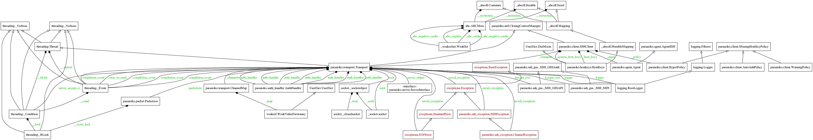

Exploring Paramiko¶

Thorazine Advertisement (source: wikipedia)
{kind=link}
This is an exploration of paramiko, a python implementation of an SSH client. I will focus primarily on the SSHClient class that it provides, as this is what I work with the most.
Paramiko What?¶
This is taken from the README file:
What¶
“paramiko” is a combination of the esperanto words for “paranoid” and “friend”. it’s a module for python 2.5+ that implements the SSH2 protocol for secure (encrypted and authenticated) connections to remote machines. Unlike SSL (aka TLS), SSH2 protocol does not require hierarchical certificates signed by a powerful central authority. you may know SSH2 as the protocol that replaced telnet and rsh for secure access to remote shells, but the protocol also includes the ability to open arbitrary channels to remote services across the encrypted tunnel (this is how sftp works, for example).
Note
According to Google Translate ‘paranoid friend’ translates to ‘paranoja amiko’ in esperanto.
The Module Diagram¶
Let’s see what the module looks like.
Well, there’s a lot there. If nothing else, this might indicate how complicated the SSHClient is.
Class Diagram¶
Okay, having looked at the module-dependencies for paramiko.client, let’s look at the SSHClient class itself.

A Localhost Experiment¶
Okay, so now that I see the diagrams and the API, how would I use this to connect to a host? As it turns out I have a user called fakeuser on this computer set-up, along with a running open-ssh-server, so let’s try a connect call.
The connect API¶
SSHClient.connect(hostname[, port, ...]) |
Connect to an SSH server and authenticate to it. |
The Connect Call¶
client = SSHClient()
try:
client.connect('localhost', username='fakeuser')
except paramiko.SSHException as error:
print(error)
Server 'localhost' not found in known_hosts
Well, that didn’t work. If you look in the docstring for the SSHClient you will see that they recommend making a call to client.load_system_host_keys:
client = SSHClient
client.load_system_host_keys()
Load System Host Keys API¶
SSHClient.load_system_host_keys([filename]) |
Load host keys from a system (read-only) file. |
So, let’s try that again.
client.load_system_host_keys()
try:
client.connect('localhost', username='fakeuser')
except paramiko.SSHException as error:
print(error)
Server 'localhost' not found in known_hosts
Looking at my earlier code (from the original ApeTools), I’m setting the missing-host-key-policy with a method call:
# this was in the ape
client.set_missing_host_key_policy(paramiko.AutoAddPolicy())
client.load_system_host_keys()
try:
client.connect('localhost', username='fakeuser')
stdin, stdout, stderr = client.exec_command('ls')
for line in stdout:
print("StdOut: {0}".format(line))
except (IOError, paramiko.SSHException) as error:
print(error)
Private key file is encrypted
Which seems to have fixed it (the output has the files my fakeuser has in the home directory (I used adduser to add the fakeuser so there’s none of the default folders like Desktop or Documents)).
The key seems to have been setting the MissingHostKeyPolicy to use the AutoAddPolicy which seems to mean that it adds the hostname to the known-hosts automatically if it doesn’t find the name in the known-hosts. Alternatively, according to the API, you should be able to set a file-name directly for your ‘known_hosts’ file. I’m guessing that Paramiko failed earlier because it doesn’t know about the ~/.ssh/known_hosts file (or at least doesn’t check it by default.
The SSHClient.connect¶
SSHClient.connect(hostname[, port, ...]) |
Connect to an SSH server and authenticate to it. |
Now that I know how to get it to work, maybe I can look at what actually happened. This is the the signature for the SSHClient.connect method:
SSHClient.connect(hostname, port=22, username=None, password=None, pkey=None,
key_filename=None, timeout=None, allow_agent=True,
look_for_keys=True, compress=False, sock=None)
And the start of the docstring:
Connect to an SSH server and authenticate to it. The server’s host key is checked against the system host keys (see
load_system_host_keys) and any local host keys (load_host_keys). If the server’s hostname is not found in either set of host keys, the missing host key policy is used (seeset_missing_host_key_policy). The default policy is to reject the key and raise anSSHException.Authentication is attempted in the following order of priority:
- The
pkeyorkey_filenamepassed in (if any)- Any key we can find through an SSH agent
- Any
id_rsaorid_dsakey discoverable in ~/.ssh/- Plain username/password auth, if a password was given
If a private key requires a password to unlock it, and a password is passed in, that password will be used to attempt to unlock the key.
So looking at that and the MissingHostKeyPolicy and AutoAddPolicy links above, it looks like the system did not have localhost in the list of known hosts and by setting AutoAddPolicy I told it to add any unknown hosts I give it to the list of known hosts, fixing it. It seems like there would be no point to having a known hosts file and requiring confirmation for new hosts if you are going to add them automatically, so this is probably some kind of securrity risk. But given that my main use for this will be to talk to my machines on the LAN, this seems to be okay. Luckily I’m not a security expert so I don’t know how bad this really might be (ignorance is bliss, though not as much fun as mushrooms, unfortunately).
The other part of the setup (‘load_system_host_keys’) loads the private keys from your agent. I think. In testing this doesn’t seem to do anything useful. I the agent isn’t running and the key not added it will return an error. If it is running and the key added, then it works even without this call.